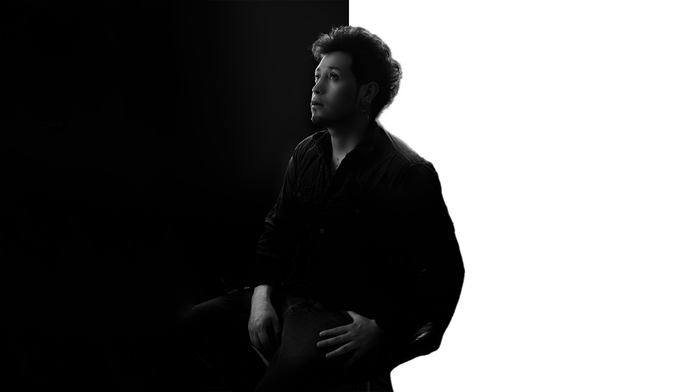

ALEXANDER VILLACRÉS
Director Creativo Visual · Filmmaker · Fotógrafo Comercial · Diseñador Gráfico
Quito, Ecuador
alex.slash182@gmail.com
+593 999 245 817
Behance: www.behance.net/AlexDlarge
Instagram: @alex_delarge.ph
Perfil Profesional
Ingeniero en Diseño Gráfico Publicitario con experiencia en producción audiovisual, fotografía comercial, contenido digital y comunicación visual. Especializado en la creación de experiencias visuales para marcas, empresas, proyectos inmobiliarios y campañas publicitarias.
Combino estrategia visual, narrativa cinematográfica y diseño para desarrollar contenido que conecta con audiencias y fortalece la identidad de marca en entornos digitales y comerciales.
Especialidades
Clientes Destacados
Experiencia Profesional
Productor Audiovisual y Coordinador de Producción
Grabbit Films
Participación en producciones audiovisuales para campañas publicitarias, contenido corporativo y proyectos comerciales de alto alcance.
- Coordinación de producción audiovisual.
- Gestión logística de rodajes.
- Supervisión de recursos técnicos y operativos.
- Coordinación de talento y locaciones.
- Ejecución de proyectos publicitarios y corporativos.
Clientes destacados:
- Chevrolet
- Banco Pichincha
- Renault
- Nissan
- Smart Fit
- KFC
- Ministerio de Salud Pública
- Banco Internacional
- Policía Nacional
- Menestras del Negro
Diseñador Gráfico Senior y Desarrollador de Comunicación Visual
Corporación Favorita / WSA Constructora
Desarrollo de material gráfico para campañas publicitarias, activaciones comerciales, comunicación institucional y puntos de venta.
Marcas:
- Supermaxi
- Megamaxi
- Akí
- Gran Akí
- Juguetón
- Sukasa
- Todo Hogar
- Kywi
- Titan
- Salón de la Navidad
- Diseño de campañas publicitarias.
- Desarrollo de material impreso y digital.
- Adaptación de piezas para medios físicos y digitales.
- Diseño promocional para retail.
- Producción gráfica para eventos y temporadas comerciales.
Fotógrafo Arquitectónico y Realizador Audiovisual
Diseñart Arquitectos
- Fotografía arquitectónica profesional.
- Producción de video inmobiliario.
- Registro audiovisual de proyectos terminados.
- Creación de contenido para redes sociales.
- Edición de fotografía y video.
- Desarrollo de material promocional para medios digitales.
Fotógrafo Comercial y Especialista en Contenido Inmobiliario
Suárez & Suárez Constructora
- Fotografía de proyectos inmobiliarios.
- Producción audiovisual para campañas digitales.
- Edición y postproducción de contenido.
- Creación de contenido para redes sociales.
- Documentación visual de obras y proyectos.
Fotógrafo Comercial y Content Creator
Sorelle Art
- Fotografía comercial y de producto.
- Producción audiovisual para redes sociales.
- Diseño de contenido promocional.
- Edición fotográfica y audiovisual.
- Desarrollo de identidad visual para campañas digitales.
Filmmaker, Fotógrafo y Diseñador Visual Freelance
Desarrollo de proyectos independientes para empresas, emprendimientos y marcas personales.
- Branding e identidad visual.
- Fotografía comercial.
- Fotografía corporativa.
- Fotografía de producto.
- Producción audiovisual.
- Cobertura de eventos.
- Edición de fotografía y video.
- Contenido para redes sociales.
- Marketing visual y comunicación digital.
Habilidades Principales
Producción Audiovisual
- Dirección de producción
- Producción de campo
- Storytelling visual
- Grabación multicámara
- Producción de contenido para marcas
Fotografía
- Fotografía comercial
- Fotografía arquitectónica
- Fotografía inmobiliaria
- Fotografía corporativa
- Fotografía de producto
Diseño y Comunicación
- Branding
- Diseño publicitario
- Diseño editorial
- Comunicación visual
- Marketing digital
Software
Herramientas de IA
- ChatGPT
- Adobe Firefly
- Runway
- Herramientas de generación visual asistida por IA
Equipo Profesional
Cámara
Sony A7 IV
Lentes
Sony FE 28-70mm
Viltrox 14mm
Audio
DJI Mic
Estabilización
DJI RS3 Mini
Iluminación
Godox SK400
Neewer
Formación Académica
- Ingeniería en Diseño Gráfico Publicitario - Universidad Tecnológica Equinoccial
- Décimo Nivel de Inglés - CEC Escuela Politécnica Nacional
- Taller de Creación de Cartoons - School of Visual Arts (SVA) New York
- Bachiller - Academia Militar Borja 3